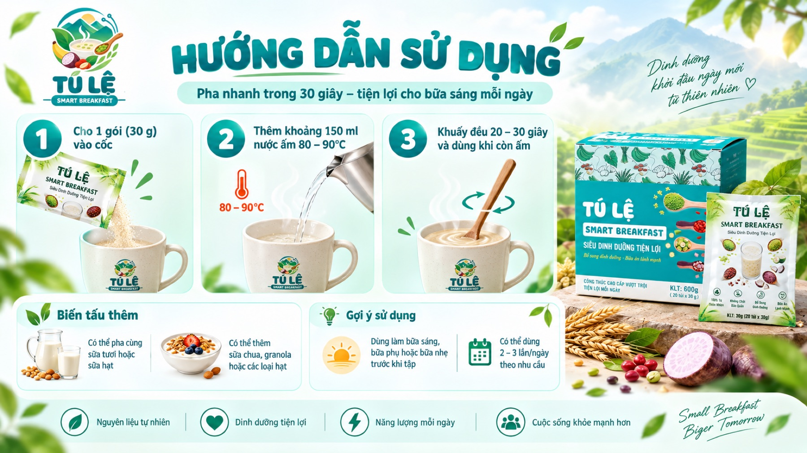

Trang chủ / Sản phẩm


Bột dinh dưỡng
Tú Lệ Smart Breakfast
Chỉ 30 giây, bạn có ngay một bữa sáng ấm nóng, thơm ngậy từ những nông sản của núi rừng Tây Bắc: cốm Tú Lệ, lạc đỏ Lục Yên, khoai môn và chuối tiêu.
Bột được sấy phun mịn tan, dễ pha, dễ mang theo, hợp với người bận rộn, dân văn phòng, học sinh, sinh viên hay bất kỳ ai muốn ăn sáng nhanh mà vẫn đủ chất.
Không phẩm màu, không hương liệu công nghiệp. Chỉ có vị ngọt tự nhiên của chuối chín và hương cốm đặc trưng.
Giá bán
20 gói × 30g
Bán lẻ theo gói
- Thành phần: cốm Tú Lệ, chuối xanh, lạc đỏ Lục Yên, khoai môn
- Hạn sử dụng 12 tháng kể từ ngày sản xuất
- Mỗi hộp có mã QR mở hồ sơ truy xuất của đúng lô hàng đó
Vì sao chọn sản phẩm này
Bốn điều làm nên khác biệt
Pha trong 30 giây
Bột sấy phun tan nhanh trong nước ấm. Một gói 30g gọn nhẹ, mang theo được, không cần đun nấu hay dụng cụ gì thêm.
Giàu tinh bột kháng, 20,4 g/100g
Tinh bột kháng là loại tinh bột đi qua ruột non mà không bị tiêu hóa hết, hỗ trợ tiêu hóa và giúp no lâu hơn. Nhóm khai thác chất này từ chuối xanh thu hoạch khoảng 9 tuần.
Ngọt từ chuối chín
Vị ngọt đến hoàn toàn từ chuối chín, không thêm đường tinh luyện. Không phẩm màu, không hương liệu công nghiệp.
Truy xuất bằng mã QR
Quét mã QR trên bao bì để xem nguyên liệu, vùng trồng và các công đoạn sản xuất, minh bạch từ nông trại đến gói bột.
Cách dùng
Hướng dẫn sử dụng sản phẩm

Ba bước
- Cho một gói 30g vào cốc.
- Thêm khoảng 150ml nước ấm, 80 đến 90 độ C.
- Khuấy đều 20 đến 30 giây và dùng khi còn ấm.
Biến tấu và gợi ý
Có thể pha cùng sữa tươi hoặc sữa hạt thay nước. Thêm sữa chua, granola hoặc các loại hạt để bữa sáng đầy đặn hơn.
Dùng làm bữa sáng, bữa phụ hoặc bữa nhẹ trước khi tập, 2 đến 3 lần mỗi ngày theo nhu cầu.
Bảo quản nơi khô ráo, thoáng mát, tránh ánh sáng trực tiếp. Hạn sử dụng 12 tháng kể từ ngày sản xuất.
Câu hỏi thường gặp
Trước khi bạn đặt
Tinh bột kháng là gì và vì sao lại quan trọng?
Tinh bột kháng, còn gọi là tinh bột bền, là phần tinh bột không bị tiêu hóa hết ở ruột non. Nó góp phần hỗ trợ tiêu hóa và tạo cảm giác no lâu hơn so với tinh bột thường.
Sản phẩm đạt 20,4 g trên 100g, chủ yếu đến từ chuối tiêu xanh thu hoạch ở khoảng 9 tuần. Xem thêm ở trang Thành tựu.
Sản phẩm có thêm đường hay chất bảo quản không?
Không thêm đường tinh luyện. Vị ngọt đến từ phần chuối chín trong công thức. Sản phẩm cũng không dùng phẩm màu và hương liệu công nghiệp.
Mã QR trên bao bì tra ở đâu?
Dùng camera điện thoại quét trực tiếp, mã sẽ mở hồ sơ của lô hàng. Nếu không quét được, nhập mã in dưới mã QR tại trang trace.smartbreakfast.store.
Chi tiết cách hệ thống hoạt động nằm ở trang Công nghệ truy xuất.
Ai sản xuất sản phẩm này?
Sản phẩm do nhóm học sinh nghiên cứu công thức và quy trình, sản xuất cùng thực nghiệm công nghệ tại Trung tâm Phát triển và Giao dịch Công nghệ thành phố Hà Nội, số 7 Nguyễn Trãi, Hà Đông, Hà Nội.
Nguyên liệu do các hợp tác xã và hộ nông dân địa phương cung cấp.
Một hộp dùng được bao lâu?
Hộp 600g gồm 20 gói, mỗi gói một khẩu phần. Nếu dùng một gói mỗi buổi sáng thì hộp đủ cho 20 ngày.